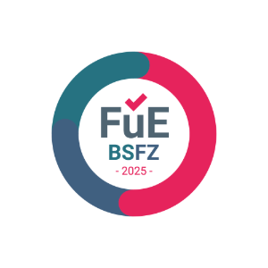
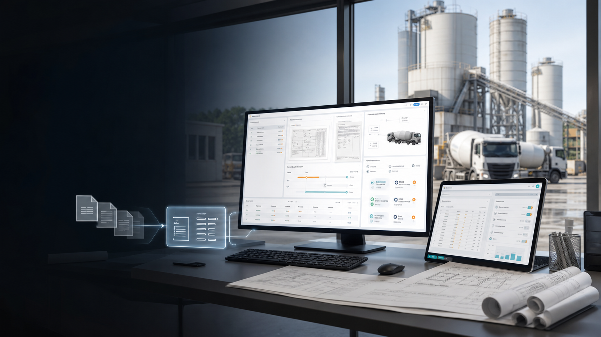

IA
ConcreteCockpit
L'IA lit les dossiers d'appel d'offres et prépare des offres SAP pour le béton prêt à l'emploi.
En savoir plusProduits IA pour processus documentaires SAP depuis Heidelberg
ExeQwork développe des produits IA qui lisent, classifient, contrôlent et structurent les documents pour SAP. Le développement SAP, DMS et le conseil processus restent la base technique ; le focus est l'automatisation IA concrète.

Label BSFZ pour recherche et développementPortefeuille de produits IA
Le portefeuille central transforme les documents non structurés en données SAP utilisables : analyse DQE, classification documentaire, détermination de l'expéditeur, OCR et contrôles assistés par IA.
Le développement SAP classique, SAP DMS et l'expertise migration restent importants, mais ils servent surtout à intégrer les résultats IA de manière robuste dans les processus existants.

Nouveau : ConcreteCockpit
ConcreteCockpit automatise la préparation d'offres pour les producteurs de béton prêt à l'emploi. Le système analyse les dossiers d'appel d'offres, reconnaît les postes béton, calcule les quantités et prépare des brouillons d'offres dans SAP ECC ou SAP S/4HANA.
Portefeuille IA
L'IA lit les dossiers d'appel d'offres et prépare des offres SAP pour le béton prêt à l'emploi.
En savoir plusL'IA reconnaît les types de documents et lance les bons processus SAP.
En savoir plusL'IA identifie expéditeurs, fournisseurs et partenaires dans les documents entrants.
En savoir plusLa reconnaissance de texte fournit la base pour classification, recherche et contrôles IA.
En savoir plusL'IA et les LLM lisent les données et lignes de facture et préparent les processus proches de SAP.
En savoir plusContact
Décrivez les documents qui sont lus, contrôlés ou affectés manuellement aujourd'hui. Nous vérifions quel produit IA convient et comment l'intégrer proprement dans SAP.
info@exeqwork.com